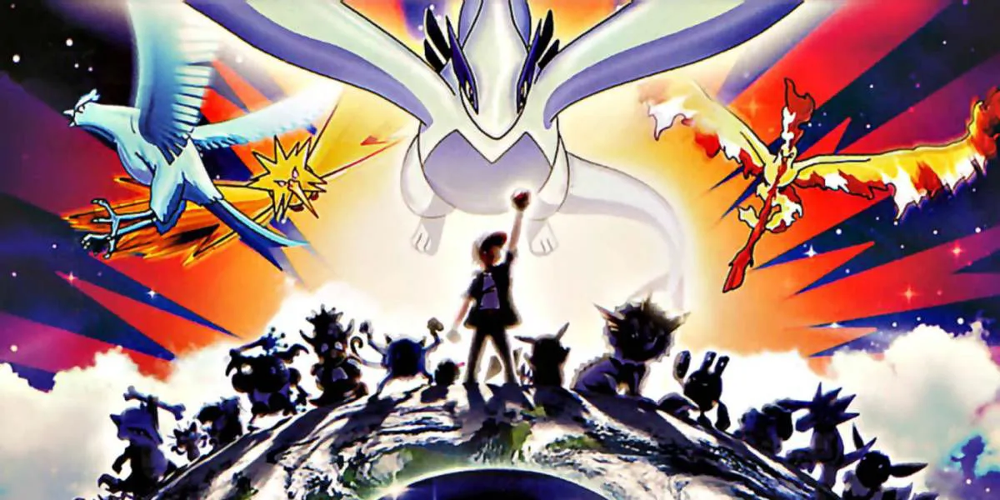

Em uma reviravolta chocante, a lenda dos pássaros lendários se tornou realidade no filme Pokémon 2000. De acordo com fontes confiáveis, o equilíbrio do mundo foi ameaçado quando um colecionador de Pokémon capturou os pássaros lendários Articuno, Zapdos e Moltres. Isso desencadeou uma série de eventos catastróficos que ameaçaram a existência do mundo.
A única esperança para salvar o mundo era o lendário Pokémon Lugia, que precisava ser despertado pelo "escolhido" para restaurar o equilíbrio. Em uma corrida contra o tempo, Ash Ketchum, um jovem treinador de Pokémon, embarcou em uma jornada épica para encontrar as esferas elementais e despertar Lugia.
Com a ajuda de seus amigos e seus fiéis Pokémon, Ash enfrentou desafios e perigos para salvar o mundo. No final, ele conseguiu despertar Lugia e restaurar o equilíbrio do mundo.
Este filme emocionante mostra a importância da amizade, coragem e trabalho em equipe na luta contra as adversidades. É um alerta para todos nós sobre a importância de proteger o equilíbrio do nosso mundo. Não perca Pokémon 2000!
Assista o Trailer abaixo: